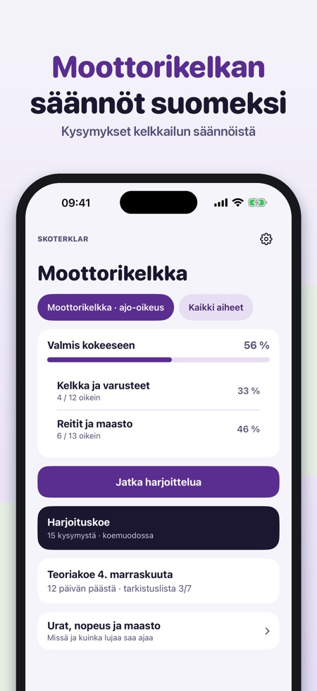
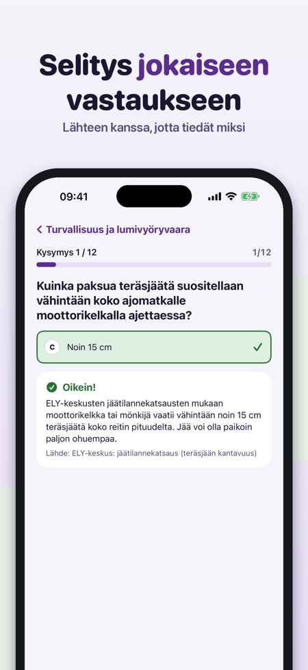
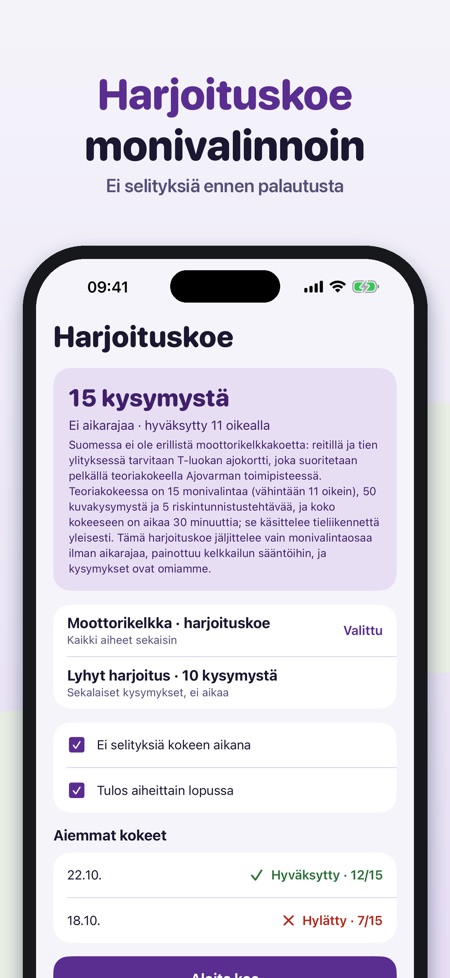

Kelkkailun säännöt ja teoria. Harjoittele moottorikelkan säännöt: kysymykset selityksineen, koeharjoitus sekä urat, nopeudet ja maastoajo – suomeksi ja myös ilman nettiä.



Skoterklar auttaa harjoittelemaan moottorikelkan teoriaa ja sääntöjä – kelkan säännöillä, ei henkilöauton.
Voit harjoitella 20 kysymystä, tehdä lyhyitä 10 kysymyksen harjoituskokeita sekä käyttää sanastoa ja tarkistuslistaa ilman ostoa. Täysi versio on kertaosto, joka avaa kaikki kysymykset, koeharjoitukset ja tilastot. Ei tilausta.
Skoterklar on itsenäinen eikä liity Traficomiin tai Ajovarmaan. Suomessa kelkkareiteillä tarvitaan vähintään T-luokan ajo-oikeus; teoriakokeen teet Ajovarmalla.